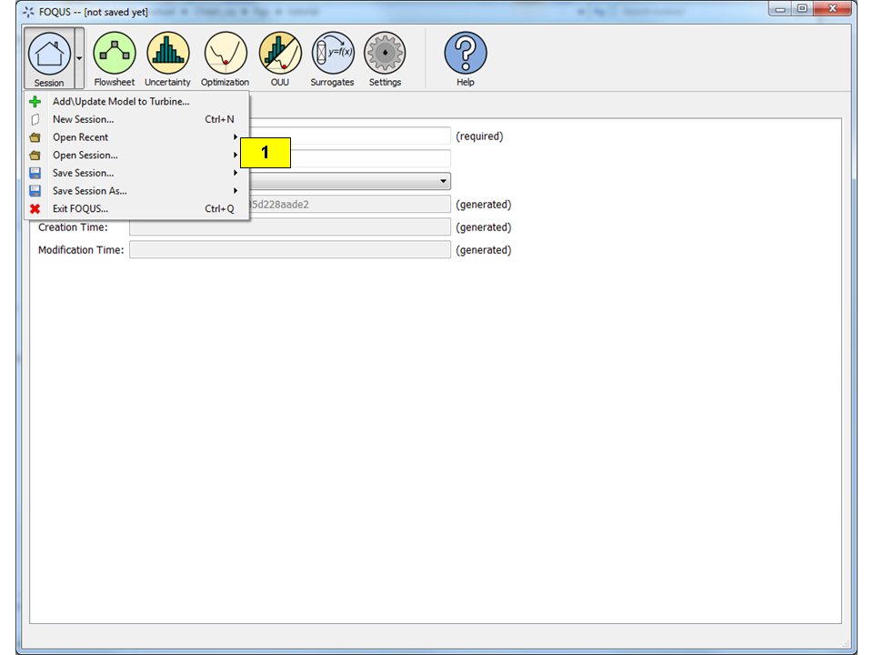
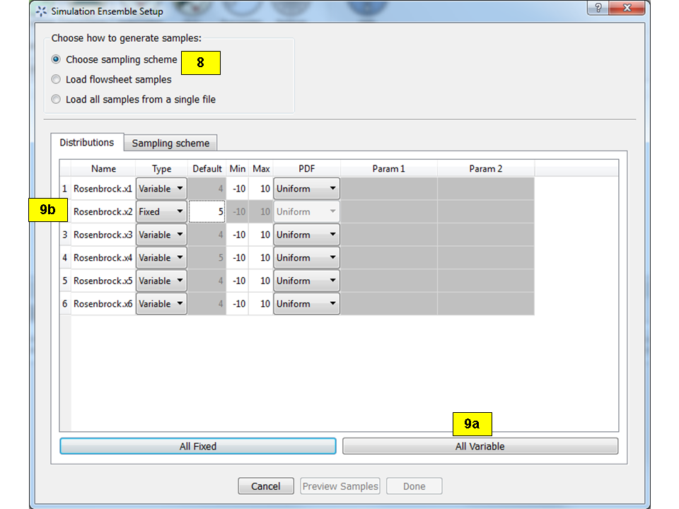
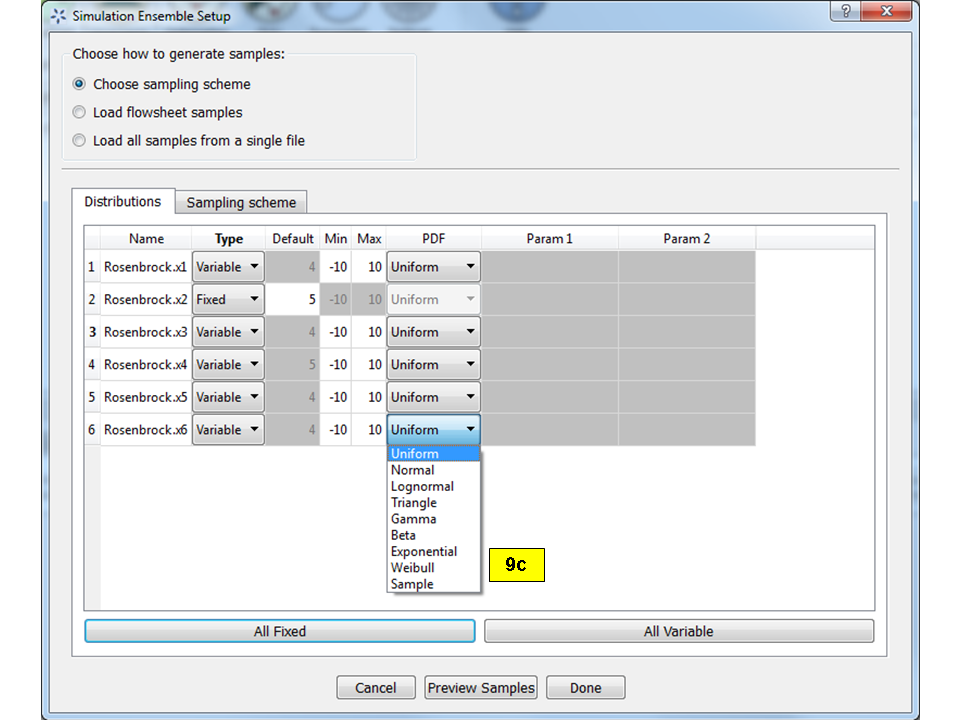
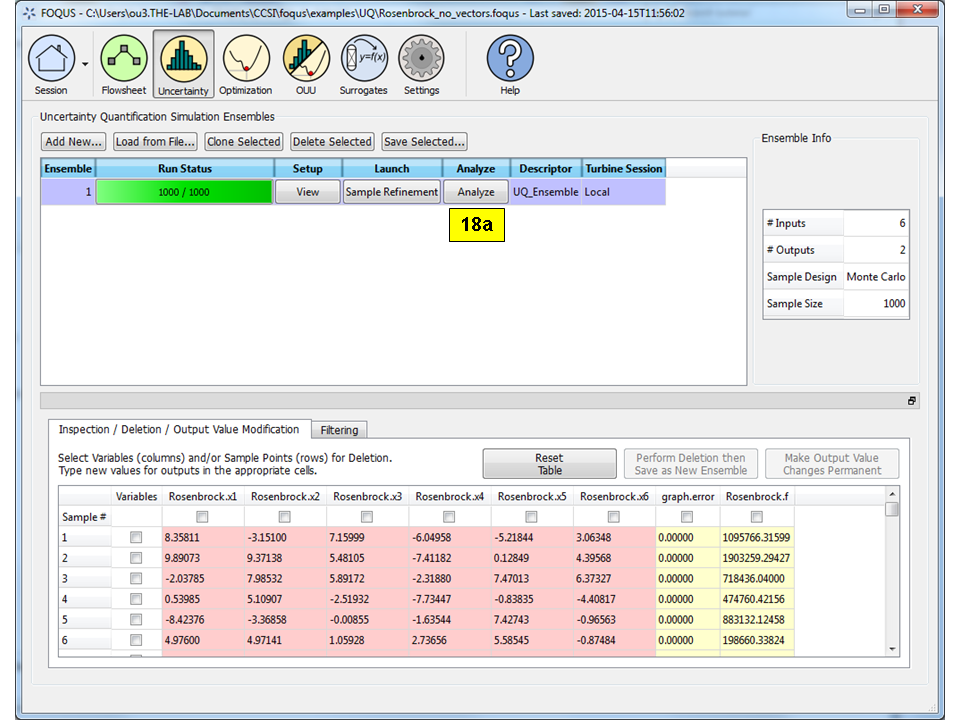

Simulation Ensemble Creation and Execution¶
In this tutorial, a simulation ensemble is created and run.
From the FOQUS main screen, click the Session button and then select Open Session to open a session. Browse to the examples folder, go into the UQ subfolder, and then select the “Rosenbrock_novectors.foqus” problem (Figure [fig:uqt_home]).
Home Screen
[fig:uqt_home]
Opening this file loads a session that has a flowsheet with one node (Figure [fig:uqt_flowsheet]). See Section [subsec.opt.tutorial.flowsheet] for a detailed example of creating a flowsheet.

Flowsheet for Rosenbrock Example
[fig:uqt_flowsheet]
Click the Uncertainty button (Figure [fig:uqt_uqhome]).
Uncertainty Quantification Screen
[fig:uqt_uqhome]
Click Add New to create a new simulation ensemble.
The Add New Ensemble dialog displays (Figure[fig:uqt_addnew]). The “Use flowsheet” option should be enabled.
- This item describes additional features and is provided for information only. It is not intended to be followed as part of the step-by-step tutorial.An alternative is to use an emulator by selecting “Use emulator.” This alternative is preferred if the actual simulation model is too computationally expensive to be practical for a large number of samples. This option enables the user to trade off accuracy for speed by training a response surface to approximate the actual simulation model. If this option is selected (Figure [fig:uqt_addnew_emulator]), the user needs to provide a training data file containing a small simulation ensemble generated from the actual simulation model. This training data file is be in the PSUADE full file format (Section [ap:psuadefiles]).
- Click Browse and select the training data file with which to train the response surface. The inputs, outputs and response surface type is read from the training data and populated accordingly on this dialog box.
- Select Output(s) of Interest. To select multiple outputs, the user can use Shift + Click to select a range, or use Ctrl + Click to select/deselect individual outputs.
Click OK.

Add New Ensemble Dialog, Flowsheet Option
[fig:uqt_addnew]
Add New Ensemble Dialog, Emulator Option
[fig:uqt_addnew_emulator]
This displays the Simulation Ensemble Setup dialog box (Figure[fig:uqt_sim]) that prompts the user for options specific to the creation of input samples.
Within the Distributions tab, the Distributions Table has all the inputs from the flowsheet node, each displayed in its own row.
- Click the All Variable button.
- Change the Type of “x2” to “fixed.”
- Enter 5 into the Default column for “x2.”
Subsequently, other cells in the row are enabled or disabled according to the type selection.
Simulation Ensemble Setup Dialog, Distributions Tab
[fig:uqt_sim]
In this dialog, extra options that are available related to simulation ensemble setup are discussed.
Change the PDF of “x6” by exploring the drop-down list in the PDF column of the Distributions Table. The drop-down list is denoted by box (9c) in Figure [fig:uqt_sim_pdfs]. If any of the parametric distributions are selected (e.g., “Normal”, “Lognormal”, “Weibull”), the user is prompted to enter the appropriate parameters for the selected distribution. If non-parametric distribution “Sample” is selected, the user needs to specify the name of the sample file (a CSV or PSUADE sample format is located in Section [ap:psuadefiles]) that contains samples for the variable “x6.” The user also needs to specify the output index to indicate which output in the sample file to use. The resulting simulation ensemble would contain “x6” samples that are randomly drawn (with replacement) from the samples in this file.
Simulation Ensemble Setup Dialog, Distributions Tab, PDF Selection
[fig:uqt_sim_pdfs]
Alternatively, select Choose sampling scheme (box (8) of Figure[fig:uqt_sim]), and try selecting “Load all samples from a single file.” With this selection, a new dialog box (Figure[fig:uq_sim_loadsample]) prompts the user to browse to a PSUADE full file, a PSUADE sample file, or CSV file (all formats are described in Section[ap:psuadefiles]) that contains all the samples for all the input variables in the model.
Both of these options offer the user additional flexibility with respect to characterizing input uncertainty or generating the input samples directly.
Once complete, switch to the Sampling Scheme tab (Figure[fig:uqt_sim_samplescheme]).

Simulation Ensemble Setup Dialog, Sampling Scheme Tab
[fig:uqt_sim_samplescheme]
Select a sampling scheme with the assumption that the user is unsure which sampling scheme to use, but wants to perform some kind of response surface analysis. This example helps the user find a suitable one.
- Click For response surface analysis. Note the list on the right changes accordingly.
- Select “Latin Hypercube” from the list on the right.
To generate 500 samples, change the value in “# of samples.” Some sampling schemes may impose a constraint on the number of samples. If the user has entered an incompatible sample size, a pop-up window displays with guidance on the recommended samples size.
Click Generate Samples to generate the sample values for all the variable input parameters. On Windows, if the user did not install PSUADE in its default location (C:Program Files (x86)psuade_project 1.7.1binpsuade.exe) and the user did not update the PSUADE path in FOQUS settings (refer to Section[session-menu]), then the user is prompted to locate the PSUADE executable in a file dialog.
Once the samples are generated, the user can examine them by clicking Preview Samples. This displays a table of the values, as well as the option to view scatter plots of the input values. The user can also select multiple inputs at once to view them as separate scatter plots on the same figure.
When finished, click Done.
The simulation ensemble should be displayed in the Simulation Ensemble Table. If the user would like to change any of the parameters and regenerate a new set of samples, simply click the Revise button.
Next, calculate the output value for each sample. Click Launch. The user should see the progress bar quickly advance, displaying the status of completed runs (Figure[fig:uqt_ensem_added]).

Simulation Ensemble Added
[fig:uqt_ensem_added]
Next, look at the output.
Click Analyze for “Ensemble 1” (Figure[fig:uqt_ensem_complete]).
Simulation Ensemble Evaluation Complete
[fig:uqt_ensem_complete]
Step 1 of “Analysis” (bottom page), the user selects Ensemble Data (Figure[fig:uqt_analysis]).

Simulation Ensemble Analysis
[fig:uqt_analysis]
Step 2 of “Analysis” is to select “Rosenbrock.f” (Figure[fig:uqt_analysis]).
Step 3 of “Analysis” is to keep the analysis method as “Uncertainty Analysis” and then click Analyze. The user should see two graphs displaying the probability and cumulative distributions plots (Figure[fig:10a.rosenua]).
Uncertainty Analysis Results
Prior to this, the “Rosenbrock” example was selected to illustrate the process of creating and running a simulation ensemble because simulations complete quickly using this simple model. But from this point on, the adsorber subsystem of the A650.1 design is used as a motivating example to better illustrate how one would apply UQ within the context of CCSI.
A quick recap on our motivating example: The A650.1 design consists of two coupled reactors: (1) the two-stage bubbling fluidized bed adsorber and (2) moving bed regenerator, in which the output (outlet of sorbent stream) from one reactor is the input (inlet) for the other. The performance of the entire carbon capture system is obtained by solving these two reactors simultaneously, accounting for the interactions between the reactors. However, it is also necessary to study the individual effects of the adsorber and the regenerator without the side effects of their coupling since the two reactors display distinct characteristics under different operating conditions. Thus, the Process Design/Synthesis Team has given us a version of the A650.1 model that can be run in two modes: (1) coupled and (2) decoupled. In this section, analysis results are presented from running the A650.1 model using the decoupled mode and examining the adsorber in isolation from the regenerator.